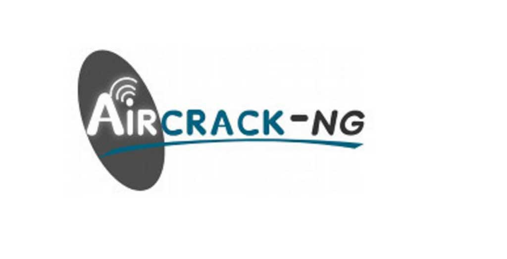
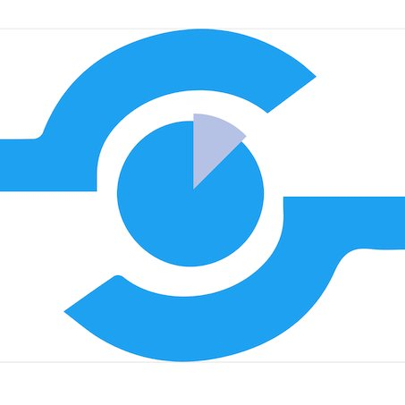
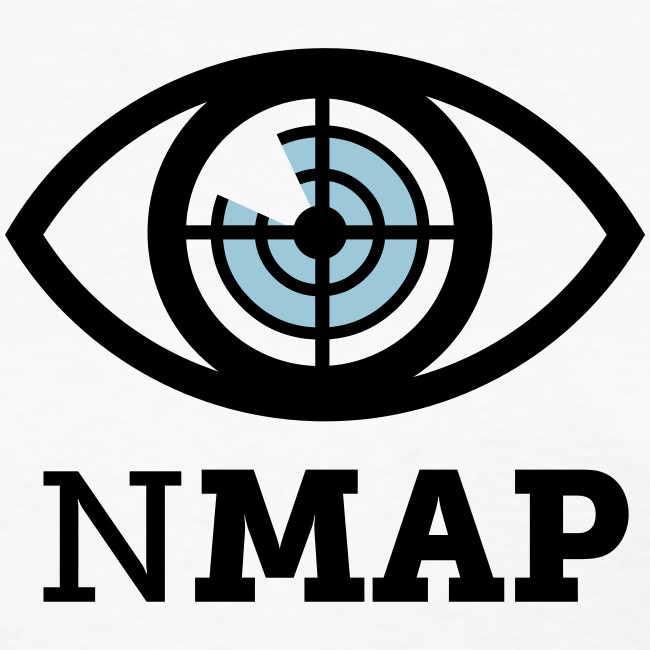
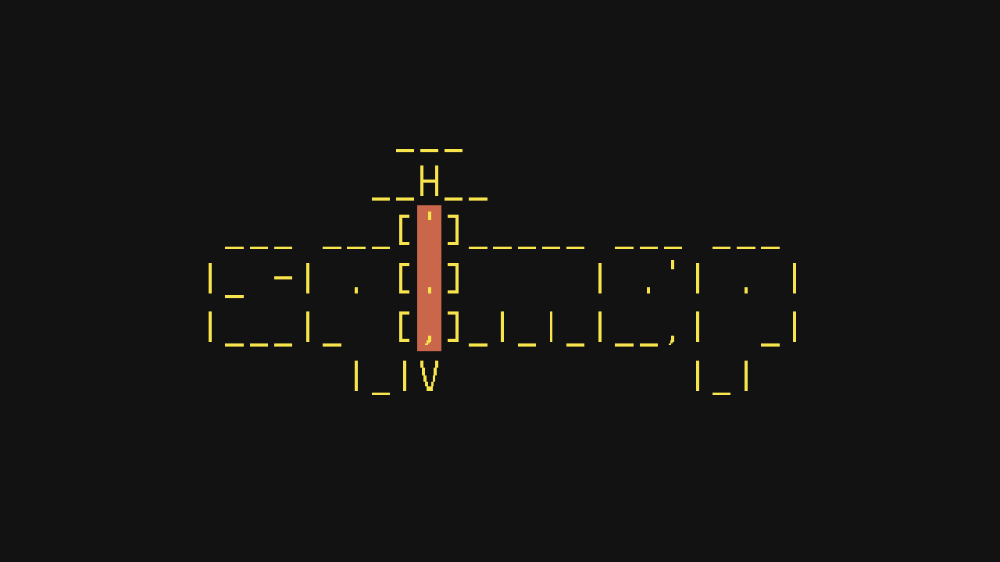

Aircrack-ng is an 802.11 WEP and WPA-PSK keys cracking program that can recover keys once enough data packets have been captured. It implements the standard FMS attack along with some optimizations like KoreK attacks, as well as the all-new PTW attack, thus making the attack much faster compared to other WEP cracking tools.

Polenum is a python script which uses the Impacket Library from CORE Security Technologies to extract the password policy information from a windows machine. This allows a non-windows (Linux, Mac OSX, BSD etc..) user to query the password policy of a remote windows box without the need to have access to a windows machine.

Nmap, short for Network Mapper, is a free, open-source tool for vulnerability scanning and network discovery. Network administrators use Nmap to identify what devices are running on their systems, discovering hosts that are available and the services they offer, finding open ports and detecting security risks.

sqlmap is an open source penetration testing tool that automates the process of detecting and exploiting SQL injection flaws and taking over of database servers. It comes with a powerful detection engine, many niche features for the ultimate penetration tester and a broad range of switches lasting from database fingerprinting, over data fetching from the database, to accessing the underlying file system and executing commands on the operating system via out-of-band connections.
Firewalk is an active reconnaissance network security tool that attempts to determine what layer 4 protocols a given IP forwarding device will pass. Firewalk works by sending out TCP or UDP packets with a TTL one greater than the targeted gateway. If the gateway allows the traffic, it will forward the packets to the next hop where they will expire and elicit an ICMP_TIME_EXCEEDED message. If the gateway hostdoes not allow the traffic, it will likely drop the packets on the floor and we will see no response.
.png)
InSpy is a Python-based LinkedIn enumeration tool with two functionalities: TechSpy and EmpSpy. TechSpy crawls LinkedIn job listings for technologies used by the target company. InSpy attempts to identify technologies by matching job descriptions to keywords from a newline-delimited file.